Designing and building handwired split mechanical keyboard
As a computer science student a keyboard is my everyday tool. For a long time, I used a cheap chinese brand 65% mechanical keyboard.
I enjoyed the feeling when typing on it (it had knock-off Cherry MX brown switches), as opposed to my previous very old membrane keyboard.
Soon I discovered, there is a big community focused on building custom keyboards, but the prices of some branded parts seemed really crazy to me.
Later, I found out, there are people who design and make the keyboards by themselves, according to their needs, and it can also be done on a healthy budget.
With access to 3D printer and my passion to design and make things, the idea of building my own keyboard was born.
Design
The first challenge was, how to fit the keyboard plate on a 3D printer - PRUSA MK3s, which has the bed size of 210x210 mm.
I previously saw some classic keyboards made with 3D printing, the plate was split to multiple parts and then attached together.
I didn't really dig this idea, because of the aesthetics, but also I was concerned about the durability of the keyboard. I wanted to build something that can really last a while,
and the plate breaking would mean it would require to desolder all the switches to repair the keyboard, which is very time consuming.
Uppon some research, I discovered ergonomic ortholinear keyboards, and also split keyboards.
The idea of split keyboard really imposed me - it could easily fit onto the printer bed, it is ergonomic, and I also liked the hacker-like aesthetic (I am a fan of industrial design).
I was inspired by Lily58 and Sofle keyboards.
These keyboards have a column-staggered layout (as opposed to row-staggered like traditional keyboard), which is more ergonomic and adapted to the different lengths of each finger.
There is no rational reason to use row-staggered keyboards nowdays, it's only a tradition from typewriters, that needed the space between the rows for the letter levers. Even most phones use ortholinear keyboards,
but most user doesn't notice it anyways. The column-staggered layout also helps for touch-typing which was one of my goals for building a keyboard.
At first I thought, I would just print some case for one of these keyboards and modify it to allow for hand wiring (building the keyboard without the use of PCB).
I tried priting one case, but I disliked some things about it, so I started modifying it. After struggling a lot with Fusion360, and realising that I didn't really like it even with the modifications, I decided to start from scratch and create my own design.
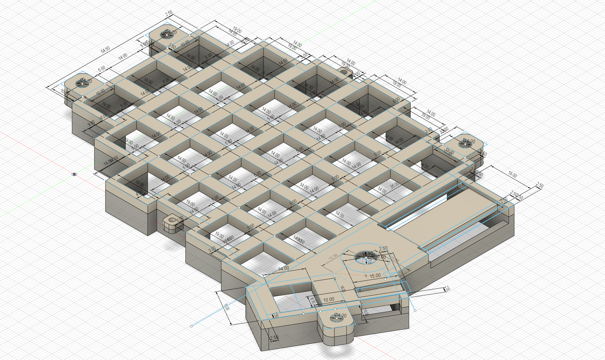
It has a encoder knob on each side, which can be used for setting volume, switching between windows, or whatever you program it to do. The two halves connect via TRRS cable. The plate directly mounts to the bottom half of the case, and the screws holding it together also serve as legs. These can be adjusted, so you can customize the angle of the keyboard. The Arduino Pro Micro controller I used is mounted just by pusing it into the slot, so it needed to be precise. I also wanted the switches to hold in place just by pressing them in, without using any glue. I first tried using 14x14 mm hole, but I fount out that 13.9x13.9 mm works too and holds the switches tighter. I also designed a small notch, because the switches have a small clip to be held better by the plate. The plates need to be well thought-out because after soldering the switches in, there is no simple way to replace it. The bottom part of the case was not that important, so I didn't bother with it until later. After a few test prints, I was happy with the result and could move to the next step.
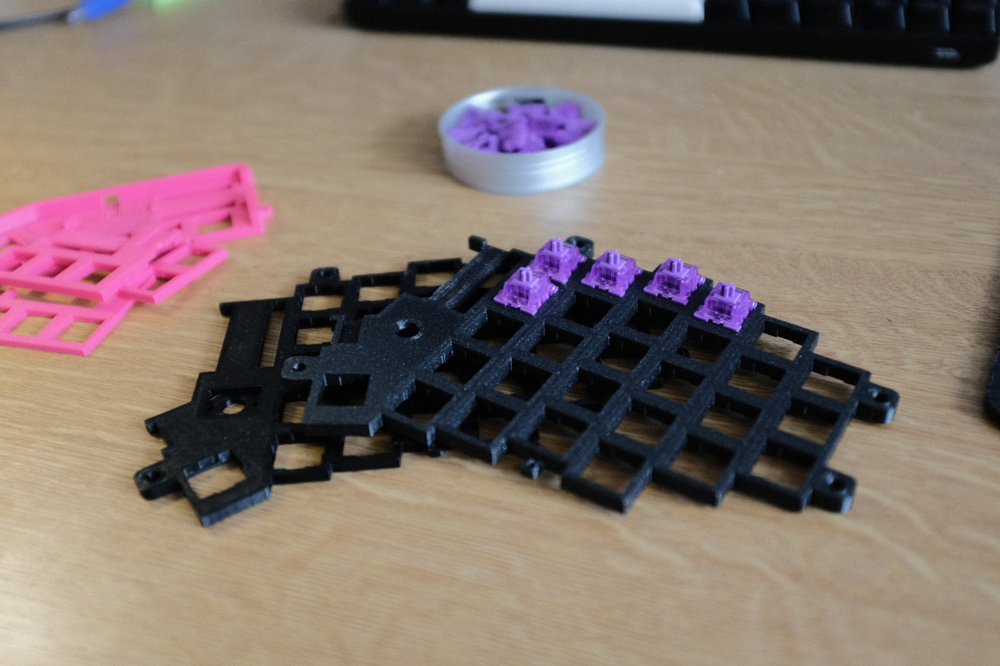
Hardware used
Here is a list of stuff I purchased for the keyboard:
- Akko lavender purple switches
- SSD1306 Oled display
- 1N4148 diodes
- 2x Arduino Pro Micro clone
- 2x EC11 rotary encoder
- 2x TRRS connector
- Keycaps
Assembly
The microcontroller doesn't have enough inputs for each switch to be directly wired, so a matrix needs to be used. The switches are connected to columns with wires and to rows with diodes. Diodes only allow the current to flow one way, so the controller knows exactly which key was pressed. In-depth explanation can be found here. It reduces the inputs required to # of cols + # of rows. In this case it is 6 + 5, instead of 28 for each half. I started with soldering the diodes together, to create the row connections.
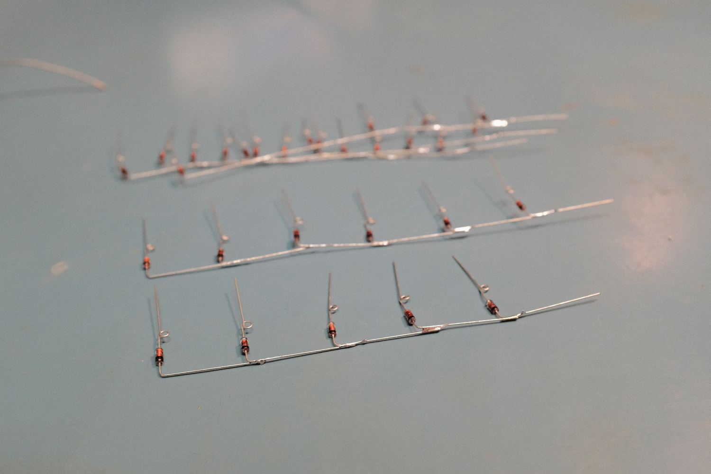
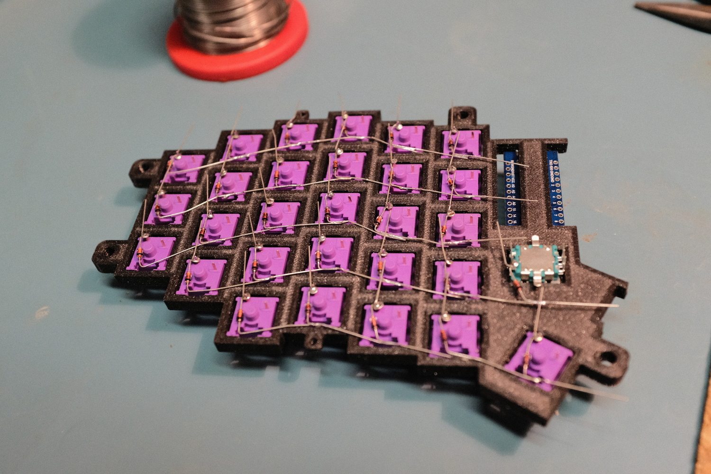
Next step is to wire the columns. I used wires from old RJ45 cable, from which I cut off small parts of the isolation with wire stripper tool and then solder it to the switches.
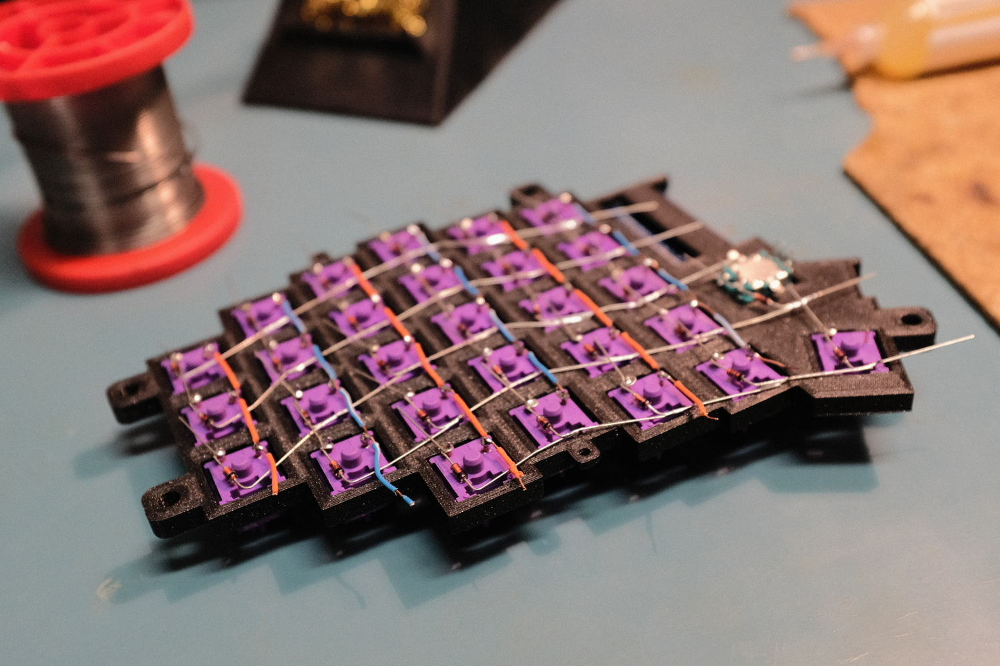
The most challenging part was wiring the rows and columns to the controller, while still trying to make it look nice. I wanted the case to be open on the bottom, for my incredible cable management work to be visible and also let through the RGB underglow that I planned.
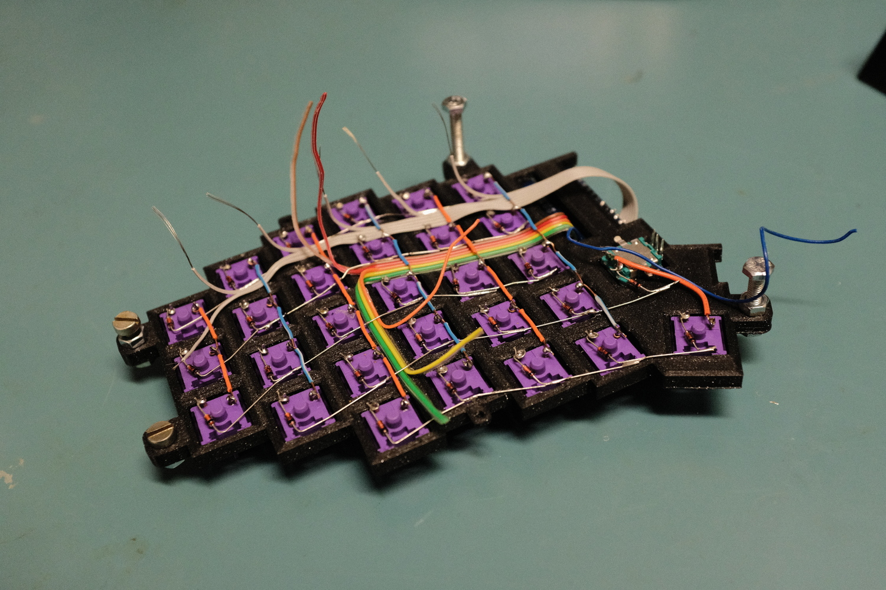
Bottom case and lighting
I designed the bottom, to be hexagonal patern and printed it with translucent fillament for nice glowing effect.
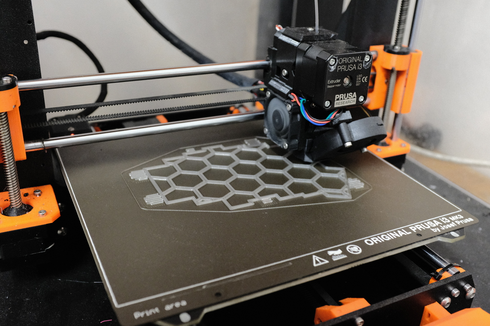
Final product
In the end, I also made my own braided TRRS cable to connect the two halves together and make it look nice. I also plan, to make my own coiled usb cable, but i didn't find the time yet.
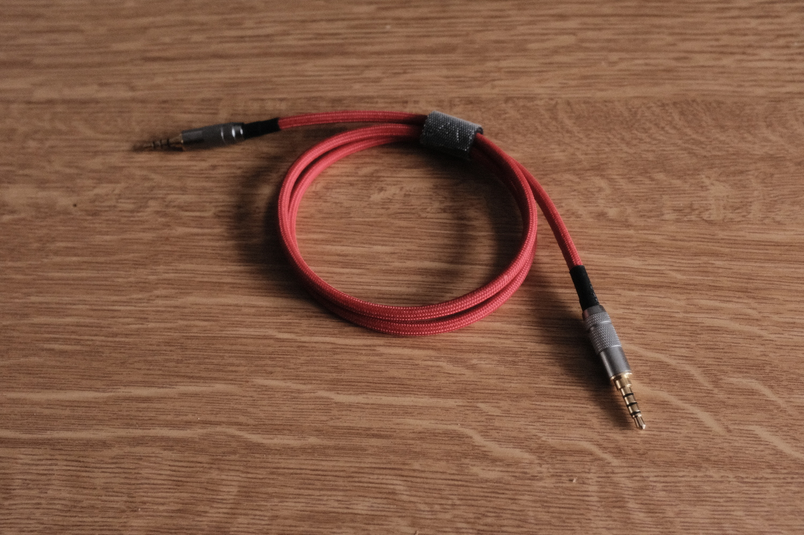
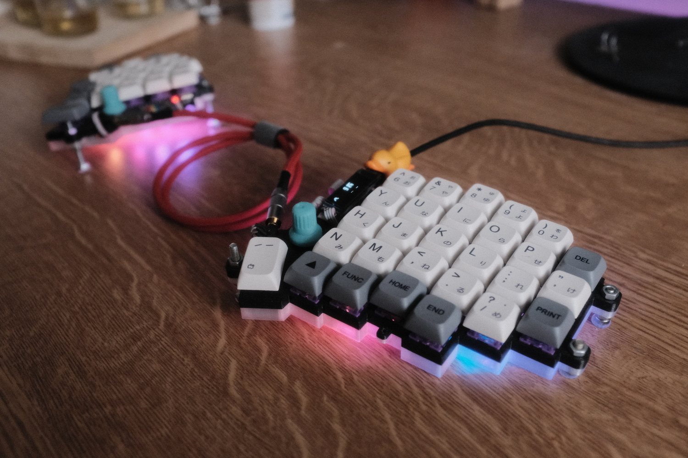

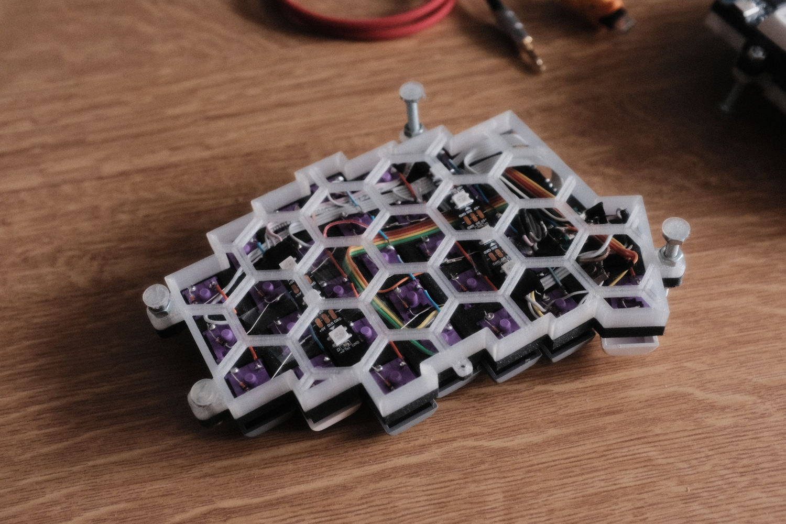
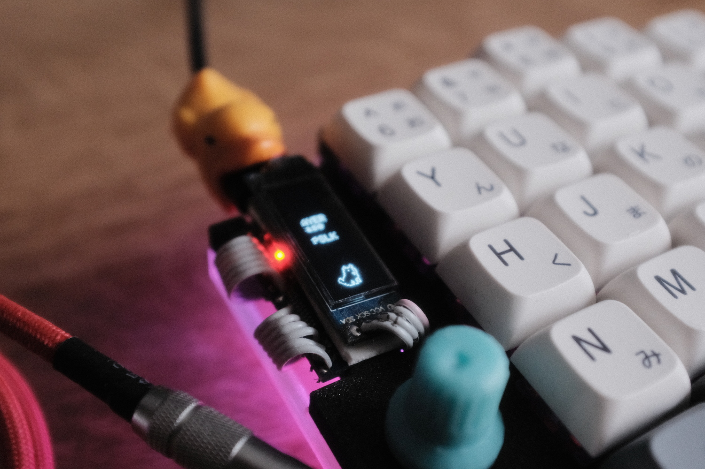
Firmware
This keyboard runs on QMK firmware. My configuration and keymaps can be found in my fork.
Conclusion
The keyboard build was around 60 euros for the parts (except filament, solder and equipment). The handwiring process took a long time and patience, but I greatly improved my soldering skills. It took a few days to get used to this layout and the absence of some keys like arrows or some navigation keys, but now I can imagine moving to even more compact layout without the num row. Maybe in the future, I will design a new keyboard with this in mind, and some other improvements too. I would like some kind of pointing device like trackball or trackpad integrated, so I don't have to move my hands off the keyboard.